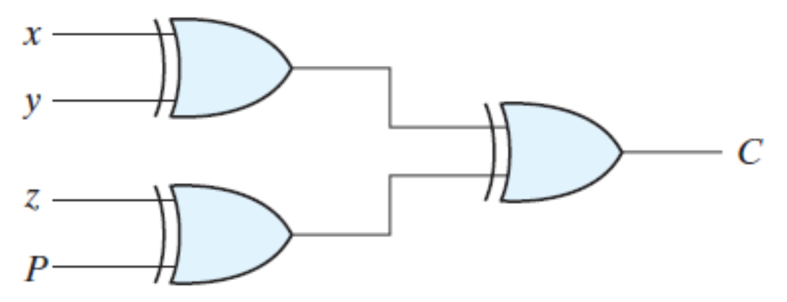

The below table shows the truth table for the Even Parity Checker in which PEC = 1 if the error occurs, i.e., the four bits received have odd number of 1s and PEC = 0 if no error occurs, i.e., if the 4-bit message has even number of 1s.

Detection of Both SA0 and SA1 Faults on a 4-Bit EVEN Parity
Checker Circuit
Introduction
One of the most widely used error detection techniques for transmission of data for sharing information between devices is Parity checking.
The Parity Checker matches the number of 1s at the receiver's end with that of the transmitter's end to check for errors. If there is a change in the number of 1s at the receiving end, then that detects the presence of an error. Since the data is transmitted with even parity, there must be an even number of 1s.
4-Bit EVEN Parity Checker
Consider that three input message along with even parity bit is generated at the transmitting end. These 4 bits are applied as input to the parity checker circuit, which checks the possibility of error on the data.

If any error occurs, the received message consists of odd number of 1s. The output of the parity checker is denoted by PEC (Parity Error Check).
The below table shows the truth table for the Even Parity Checker in which PEC = 1 if the error occurs, i.e., the four bits received have odd number of 1s and PEC = 0 if no error occurs, i.e., if the 4-bit message has even number of 1s.
The boolean expression for the Parity Error Check, C is as follows: C = x y z P
Stuck-at Fault
The most common model used for logical faults is the single stuck-at fault. Here we assume that some of the circuit lines are permanently fixed at logic-0 or logic-1 due to some failures. This line may be an input or output to any gate. Stuck-at Fault is a Functional Fault on a Boolean (Logic) Function Implementation.
It is not a physical defect mode. Stuck-at 1 does not mean line is shorted to VDD. Stuck-at 0 does not mean line is grounded. It is an abstract fault model. A logic stuck-at 1 means when the line is applied a logic 0, it produces a logical error. A logic error means 0 becomes 1 or vice versa.
Advantages
Disadvantages